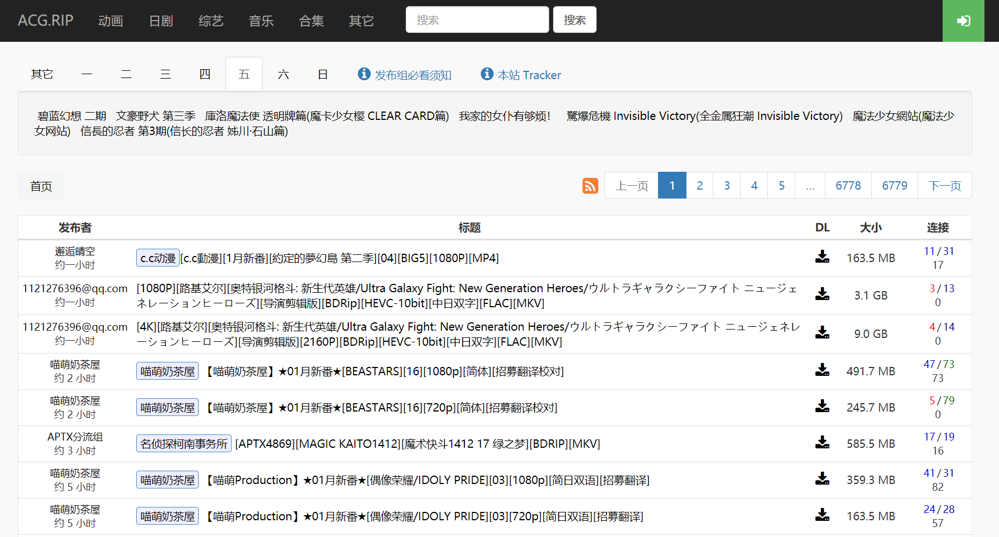
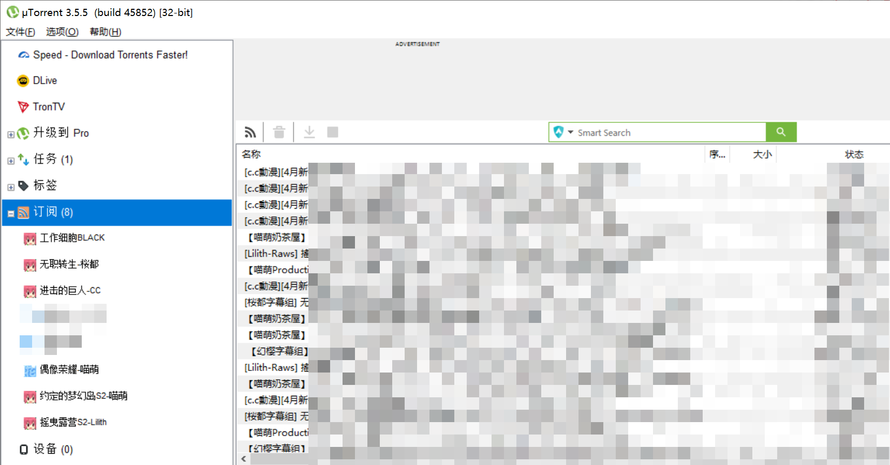
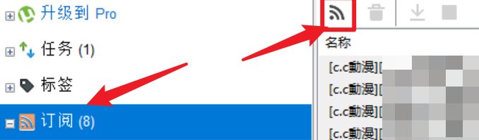
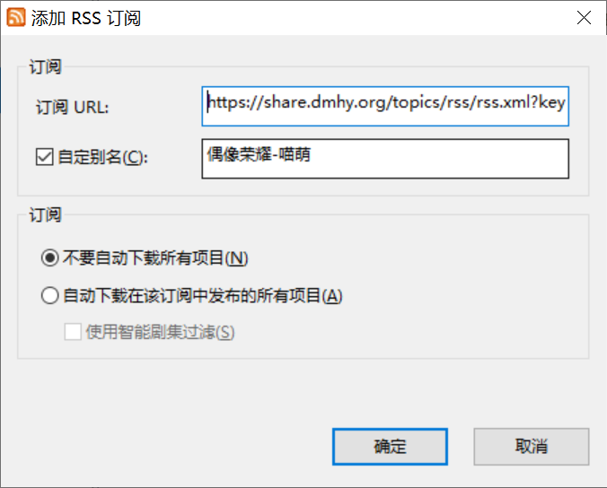
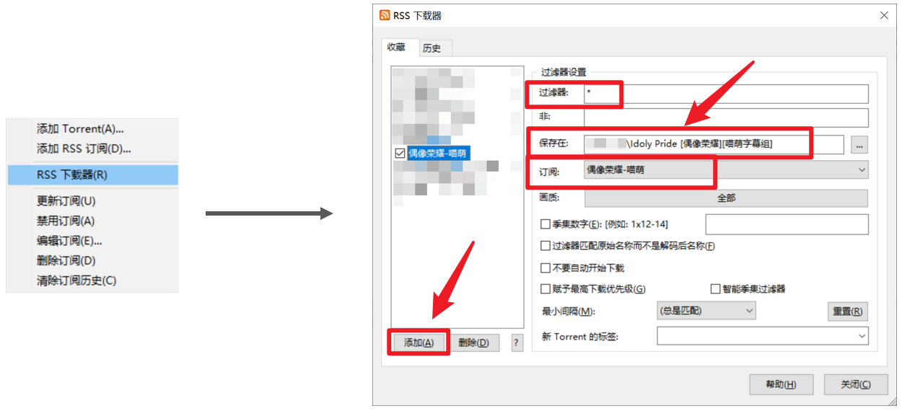
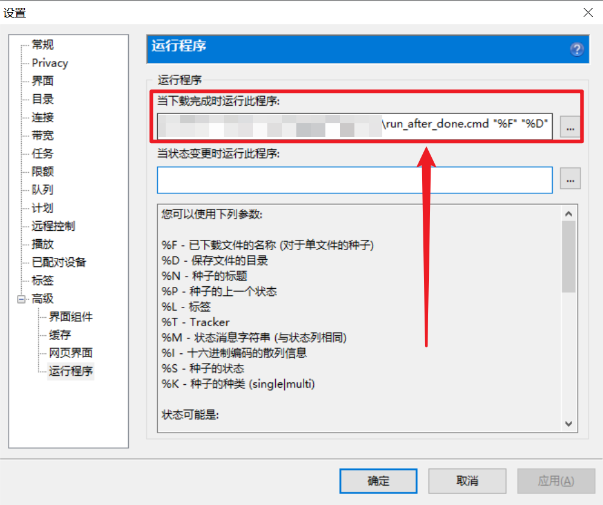
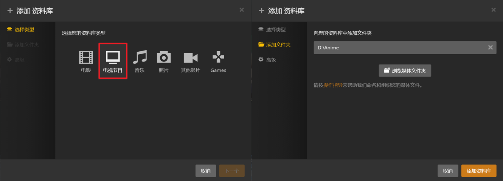

全自动种子追番系统
前言：你喜欢的番剧更新了。是你喜欢的字幕组的高清资源。里面没有放肆的圣光和暗牧。尽管它也许没在国内放送。你可以在任何设备上观看它，并且可以无缝切换。电视，手机，iPad，电脑都没有问题。它很快。
这将是本篇介绍的全自动全平台订阅追番系统。
出于各种原因，有许多番剧在B站并找不到。即使开了大会员，从国外驾梯回国，还是无法看到一些喜欢的内容。但同时，各大动漫种子站却提供了几乎无所不包的资源，其中包括新番。但依靠种子追番最常见的问题就是难以track，经常会忘记更新，而且每次都需要经过一个搜索-下载种子-下载-整理-观看的过程，确实还是很劝退的。如何搭建一个易于配置、足够简单、全自动化抓取、下载、串流的追番系统，便成为了一个追番人的核心需求。
下面本文将会带领你认识整套流程，如果你足够经常折腾，大致一个小时之内就可以搭建完成。祝你好运:)
PS: 本文涉及的所有脚本都可以在该GitHub库上找到。
软件与配置
- 源：动漫种子站。如Nyaa、ACGRIP、动漫花园、萌番组。为了避免河蟹这里就不放链接了，请自行搜索。
- 订阅与自动下载种子：RSS。
- 下载器：utorrent。
- 正则匹配与自动重命名：Python。
- 串流与自动整理：Plex。
由于上面提到的软件都支持Windows和Mac，所以认为该系统适用于两者。
流程
首先放一张整理出来的流程图：
该系统的整体思路是，使用RSS自动嗅探订阅的内容，用utorrent自动下载到番剧指定的目录，使用Python重命名成Plex可以支持的剧集命名格式后，使用Plex整理、匹配元数据，并提供串流服务，让你的电脑本身成为一个视频内容服务器，从而使你可以在家中任何设备上迅速、便捷地观看下载整理好的视频。这对于习惯在电视大屏幕、投影屏或iPad上观看视频的用户而言是十分友好的。
最终达到的效果是：一旦种子源网站上更新了一个你订阅的番剧的种子，你就可以第一时间打开电视、掏出iPad直接观看内容。
另外，由于Plex可以记住你所有视频的观看进度，所以你完全可以在手机上看了前半部分，然后坐到电视机前，从容地无缝继续观看。
效果如下：

源站
各大动漫压制组、汉化组和搬运组（统称发布组）都会将他们的资源发布到这些源站上。有的源站互为镜像，有的站是爬取的其他站的信息。它们在追新番这项任务上的表现其实都还可以，选一个你自己喜欢的站点即可。
每个发布组都有自己的偏好的番剧，也有他们独特的规矩和讲究。如VCB-Studio就偏好做高清的压制资源，但经常不附带字幕；LIlith由于主要是搬运，所以发布速度快；喵萌开的番比较多，视频质量较高，但并不是所有番剧都是及时发布的。热门番剧往往会在第一时间就有发布组发布，而一些冷门内容的更新速度就无法保证了。另外，A发布组发布X番剧可能是及时的，Y番剧要隔几天；可能B发布组则相反。最简单的方法就是检查上一集最先是由哪个组发布的，哪个组放出的资源又有最多人下载，然后进行综合判断。
RSS
引用一段Wikipedia的定义：
RSS（全称：RDF Site Summary；Really Simple Syndication[2]），中文译作简易信息聚合[3]，也称聚合内容[4]，是一种消息来源格式规范，用以聚合经常发布更新资料的网站，例如博客文章、新闻、音频或视频的网摘。RSS文件（或称做摘要、网络摘要、或频更新，提供到频道）包含全文或是节录的文字，再加上发布者所订阅之网摘资料和授权的元数据。简单来说 RSS 能够让用户订阅个人网站个人博客，当订阅的网站有新文章是能够获得通知。
RSS的本质是订阅某个信源。信源可以不断更新和推送信息，它往往表现为一个链接。让我们举一个例子。

假设我们想要追一个由喵萌奶茶屋发布的新番IDOLY PRIDE，并且只看简体的1080p版本，那么我们就可以根据其命名风格来生成对应的搜索关键词：【喵萌Production】★01月新番★[偶像荣耀/IDOLY PRIDE][03][1080p][简日双语][招募翻译]是其中一集的命名。那么我们只需要在搜索框中搜索：喵萌Production 偶像荣耀 1080p 简日，即可定位我们需要追的番的特定版本的所有后续资源。
然后我们即可把这个搜索结果的网页当做一个信源。具体获取RSS订阅链接的方法每个网站都各不相同，但大致都会有一个类似的按钮出现。点击这个按钮，在弹出的窗口的地址栏即可找到我们需要的RSS订阅链接。
复制这个链接，这一步就完成了。你成功地得到了你所需要内容的订阅链接。
utorrent
utorrent是一个可以下载种子文件和磁力链接的软件，支持Windows、Mac和Linux，也有网页版。
utorrent支持RSS订阅，相当于每当RSS订阅的信源有了新的内容，utorrent就会自动把它列出来。你也可以设置每当有新内容就自动下载，不过这要视订阅内容而定。每个RSS的自动下载位置可以是不同的文件夹。效果如下：

utorrent支持文件下载完成或状态改变后执行脚本。这个特点非常重要，下一步需要用。
RSS配置
- 首先，将上面提到的RSS链接添加到utorrent的订阅中：点击
订阅后页面中的小Wi-Fi图标即可添加，也可以右键添加RSS订阅。这时候先不用设置什么，把URL粘贴到第一项，然后定义一个方便识别的别名即可，订阅栏先选择不要自动下载所有项目。待会儿会在下载器设定中详细设置。


右键左栏
订阅中出现的新项，选择RSS下载器，进入下载器详细配置：
这里我们需要修改的只有
保存在和订阅两项，前者是这个订阅中所有文件的保存位置，订阅是这套设置将应用于哪个订阅。需要注意的是，文件夹最好为这个番剧的名字，且命名最好遵守以下规则，方便后续匹配：- 只有一个主名字。如果一个番剧既有中文名，又有日文名，还有罗马字或英语名，请只使用一个名字。使用哪个看你自己，最好是广泛接受的名字。其他语言的名字，其他信息，如字幕组，简体繁体，清晰度等，请分别使用一个中括号括住。整理串流软件由于主要遵循西方影视的命名规则，会直接忽略方括号内的所有内容，所以在方括号里面你可以放入任何你想备注的信息。
- 一套规则对应一个订阅。整个链条的对应关系是：
一个番剧名字->一条RSS链接->utorrent中一项RSS订阅->RSS下载器中一套规则->一个独立文件夹 - 过滤器如果没有需求，可以留空或
*，表示匹配所有。若是在这个订阅链接中还没有完全筛选，那你可以着这里进行另外一波过滤。
重命名
首先再解释一下为何需要重命名。正如前文所说，Plex等媒体管理软件主要还是针对欧美剧集的命名方法设计的，且会忽略方括号中所有内容。但国内，至少是番剧的命名，对于集数的命名，恰恰大多会放到方括号中，如[c.c動漫][1月新番][工作細胞 第二季][04][BIG5][1080P][MP4]里面的这个[04]就是集数。另外还有的命名是第04话，[第04话]，- 04 -等。另外，由于某些技术性错误，有些发布组会在某集发布后重新发布修复版本，此时的命名为04v2等。还有很多番剧的最后一集会被添加上END字样表示完结。而这些内容都会对后续的解析造成困难，最好可以将集数这个变量转为某种固定格式。
Python可以很好的完成这项任务。通过正则匹配上述内容，并重新组合，可以轻易的得到想要的结果。写好的脚本如下：
reg_match.py：
1 | import re |
使用的话直接将该文件存到一个新建的reg_match.py文件中即可。使用Python3.6编写，理论支持所有Python3版本。
但是，仅用Python无法直接被utorrent调用，它想要的是像exe或cmd之类的文件，并想传递下载好的文件所在目录和下载好的文件名进去。这样我们最好创建一个cmd文件，用于接受参数，并传递给Python脚本。
run_after_done.cmd
1 | set file_name=%1% |
其中，<YOUR_SCRIPT_PATH>是你存放上面提到的Python脚本的目录位置。
utorrent配置
完成了上面的两个脚本，让我们将其配置到utorrent的当下载完成时运行此程序中。效果就是，每当一个文件下载完成，utorrent都会自动调用这个cmd文件，并且将文件目录和名字都作为参数传递进去。

命令为：<YOUR_CMD_PATH>\run_after_done.cmd "%F" "%D"
其中，<YOUR_CMD_PATH>为你存放脚本run_after_done.cmd的目录。推荐将它和Python脚本放在同一个目录下。
Plex
引用一段Wiki，以方便不熟悉的朋友们了解：
Plex是一套媒体播放器及媒体服务器软件，让用户整理在设备上的有声书、音乐、播客、图片和视频文件，以供流至移动设备、智能电视和电子媒体播放器上。Plex可用于Windows、Android、Linux、OS X和FreeBSD[2]。另外，Plex亦让用户透过该平台观看来自YouTube、Vimeo和TED等内容提供商的视频。Plex亦与Bitcasa、Box和Dropbox等云端服务兼容[3][4]。
用户可透过Plex前端媒体播放器“Plex Media Player”管理及播放在一台运行“Plex Media Server”的远程电脑上的多媒体文件。另外，用户可使用“Plex Online”服务以社区开发的插件收看Netflix、Hulu和CNN的视频。[5]
简单说，就是Plex可以管理你的连续剧集（如番剧）和电影，解析出它们的元数据（如海报，封面，演职员表，简介，分集标题等等），在你的电脑上自动搭建一个服务器，向你在其他设备上的Plex软件提供像是Bilibili或Netflix一样的串流服务。形象点说就是，你自己搭建了一个简单的视频网站，数据库是你电脑上的内容，供你自己使用。
另外，Plex不仅支持内网访问，在外网访问也是可以的。内网访问要求终端设备连接到和你的电脑同一个Wi-Fi，而外网则是只要有网络连接就行。当然，内网的速度和清晰度都是更高的。
Plex支持在Windows，Mac，NAS，Docker等位置安装其server，安装过程十分简单，基本一路Next即可。
有了前面的设置，这里就很简单了。假设你的文件结构如下：
1 | Anime |
那么，你所需要做的只是：创建一个账户，然后启动你的服务器页面（地址栏输入plex.tv，右上角Launch即可，或是直接点击Link）：
点击+号，新建一个库，

简单两步，完成！
当然我们这里介绍的仅仅是添加剧集的方法，电影库、音乐库和图片库的添加方法类似。你完全可以把你的照片文件夹放到Plex上，这样你就可以在任何地方看到你的照片啦！另外，由于服务器是你自己的电脑，它并不会上传你的文件到某个云端，所以安全性也是较有保障的。
其中电影和电视节目库的最大区别是是否分集和分季。电影的解析针对的是单个的视频文件，而剧集的解析针对的是某个子文件夹。
之后，你可以进入你的库，查看效果。很大一部分内容会直接成功抓取元数据得到漂亮的封面等内容，另一些则会失败。对于失败的内容，如果你不在意其实也不影响观看，只是没有封面和介绍等。如果你介意，可以选择手动协助匹配：
匹配失败的主要原因是命名问题。在修复匹配-搜索选项中可以更改用于搜索的命名。另外，有的时候是因为搜索的数据库中没有这个数据，此时，你可以切换代理，很多时候是可以找到匹配的。如果你的命名是日语或英语，那么把搜索的语言相应修改。之后点击搜索即可。
其他
注意
- 该方法适用但不仅适用于动漫。其他类型影视剧集也可，只要你能找到合适的订阅源。
- 本文涉及的所有脚本都可以在该GitHub库上找到。
- 动漫正版化事业不易，各大网站都投入了巨大的资源来建设更全的正版资源库，请尽最大可能支持正版。请将本方法主要用于观看网盘见类剧集和存在删减的剧集。
Trouble Shooting
需要注意的是，由于utorrent在上传时会占用文件，所以有一定概率重命名会失败。解决办法也很简单，如果你觉得有问题的时候，关闭utorrent解除占用，往往需要等上几秒，然后直接将整个Anime文件夹（存放动漫的根文件夹）拖放到下面这个cmd文件上即可：
rename_episodes.cmd
1 | for %%i in (%*) do python <YOUR_SCRIPT_PATH>\reg_match.py --path=%%i |
该文件会调用前面提到的Python脚本，并对整个文件夹中的所有有问题的文件名进行重命名。你也可以将有问题的子目录或特定文件拖放上去，或是同时拖放多个文件/文件夹。Python脚本中有着相应的适配。